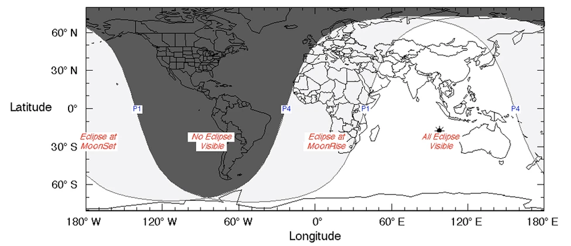
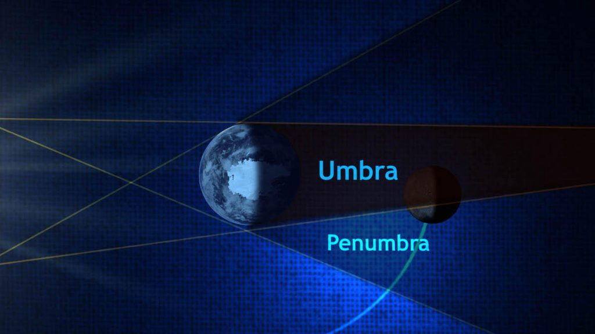

ဒီည လကြတ်တာဟာ Blood Moon လို့ခေါ်တဲ့ လအပြည့်ကြတ်လို့ လတခုလုံး နီရဲသွားတာမျိုး မဟုတ်ပဲ penumbra လို့ခေါ်တဲ့ လတဝက်တပျက် ကြတ်ခြင်း ဖြစ်ပါတယ်။ ဒါ့ကြောင့် လတခုလုံး နီသွားတာကို မတွေ့ရပဲ လက မှောင်ကျသွားတာကိုပဲ မြင်ကြရမှာ ဖြစ်ပါတယ်။
အခု လကြတ်တာကို မြင်တွေ့နိုင်မယ့် ဒေသတွေကို အောက်ကမြေပုံမှာ ဖေါ်ပြထားပါတယ်။ အဖြူရောင် ခြယ်ထားတဲ့ ဒေသတွေဟာ လကြတ်တာကို အစအဆုံး တွေ့ကြရမှာ ဖြစ်ပါတယ်။ မီးခိုးရောင်ခြယ် ဒေသတွေကတော့ လထွက်စ(သို) လဝင်ခါနီး အချိန်လေးမှာပဲ တဝက်တပျက် မြင်ရမှာ ဖြစ်ပြီး အမဲခြယ် ဒေသတွေကတော့ လုံးဝ မြင်တွေ့ကြရမှာ မဟုတ်ပါဘူး။

လအများဆုံး ကြတ်တာကို အပြည်ပြည်ဆိုင်ရာ စံတော်ချိန် ၁၇:၂၂(မြန်မာ မေ ၅ ည ၂၃:၅၂। ထိုင်း မေ ၆ မနက် ၀၀:၂၂ အချိန်) မှာ တွေ့ကြရမှာ ဖြစ်ပါတယ်။ UTC 19:31 (မြန်မာ မေ ၆ နံနက် ၀၂:၀၁ အချိန်। ထိုင်း မေ ၆ နံနက် ၀၂:၃၁ အချိန်မှာ လကြတ်ခြင်း ပြီးဆုံးမှာ ဖြစ်ပါတယ်။
လကြတ်ခြင်း ဖြစ်စဉ်တခုလုံးဟာ စုစုပေါင်း ၄ နာရီ ၁၇ မိနစ် ကြာမြင့်မှာ ဖြစ်ပါတယ်။
Penumbra လကြတ်ခြင်း ဆိုတာဘာလဲ
နေက လာတဲ့ အလင်းရောင်ဟာ လကို ဖြတ်တဲ့ အခါ အလင်းကွယ်သွားတာမို့ အရိပ် ဖြစ်ပေါ် လာပါတယ်။ ဒီလို အရိပ် ဖြစ်ပေါ်တဲ့ အရိပ်နှစ်မျိုးကို ဖြစ်ပေါ် စေပါတယ်။ အတွင်းပိုင်းမှာ ဖြစ်ပေါ်တဲ့ အရိပ်မဲကို umbra လို့ ခေါ်ပါတယ်။ သူ့အပြင်ကနေ ပိုမိုကျယ်ပြန့်တဲ့ စက်ဝိုင်းပုံ အရိပ်ဖျော့ တခုလဲ ဖြစ်ပေါ် လာပါတယ်။ ဒီအရိပ်ဖျော့ ကိုတော့ penumbra လို့ ခေါ်ပါတယ်။ကမ္ဘာဟာ လရဲ့ အတွင်းအရိပ်မည်း ထဲကို ဝင်ရောက်သွားတဲ့အခါ Umbra လကြတ်ခြင်း ဖြစ်ပေါ်လာပါတယ်။ ဒီ အခါ လမည်းမှောင် သွားတာကို ထင်ထင်ရှားရှား တွေ့ကြရမှာ ဖြစ်ပါတယ်။
ကမ္ဘာက လရဲ့ အပြင် အရိပ်ဖျော့ အတွင်း ဝင်ရောက်သွားရင်တော့ penumbra လကြတ်ခြင်း ဖြစ်ပေါ် လာပါတယ်။ ဒီလို လကြတ်ခြင်း မျိုးမှာတော့ လာဟာ သိသိသာသာ မှောင်ကျ သွားတာမျိုး မဟုတ်ပဲ အရောင်ဖျော့ သွားတာကိုပဲ မြင်တွေ့ကြရမှာ ဖြစ်ပါတယ်။
